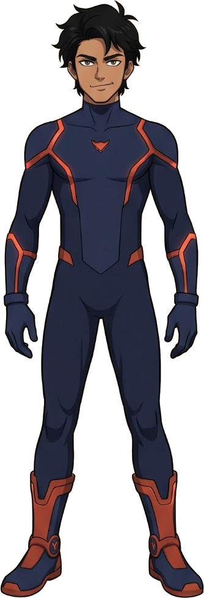
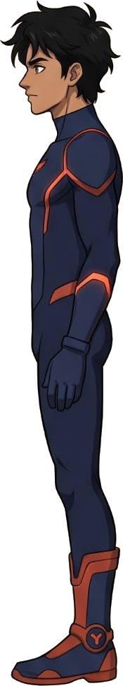
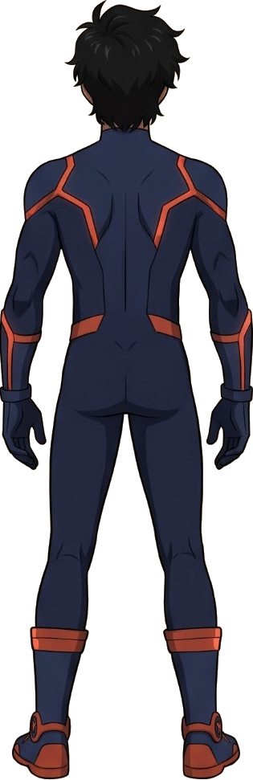
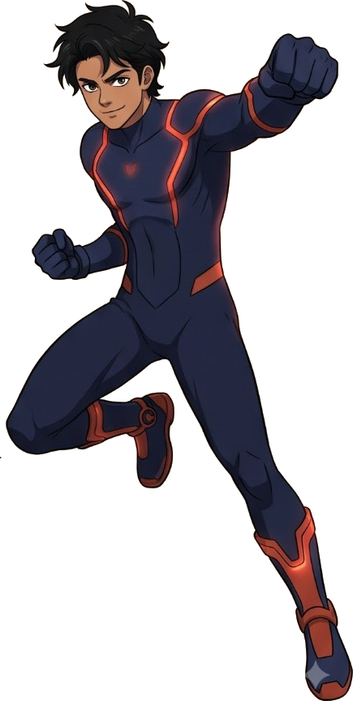
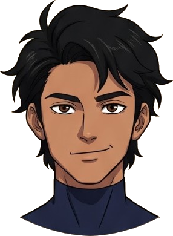
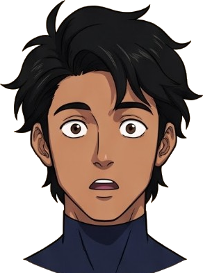
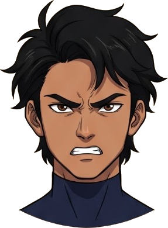
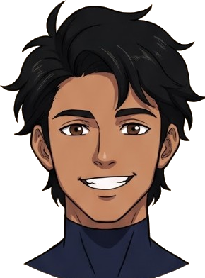

Every frame uses the original artwork cut from the reference sheet. Nothing about the character is redrawn with shapes.
The sheet is a set of flat drawings, not a rigged puppet, so limbs cannot bend. Movement comes from swapping between the drawn poses and expressions, warping the bitmap in thin strips for breathing, sway and hair, painting blinks over the eyes, and from camera work and effects.







